Prepare the Panther for MTU Expansion
Procedure
- Power down the Panther System.
- Remove the right-side door.
 Remove and discard the lower trim and mounting trim.
Remove and discard the lower trim and mounting trim.
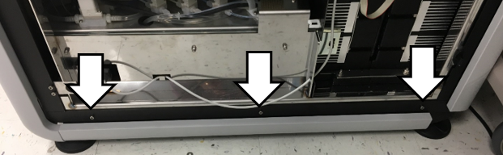
- Remove and discard the rear corner trim piece.
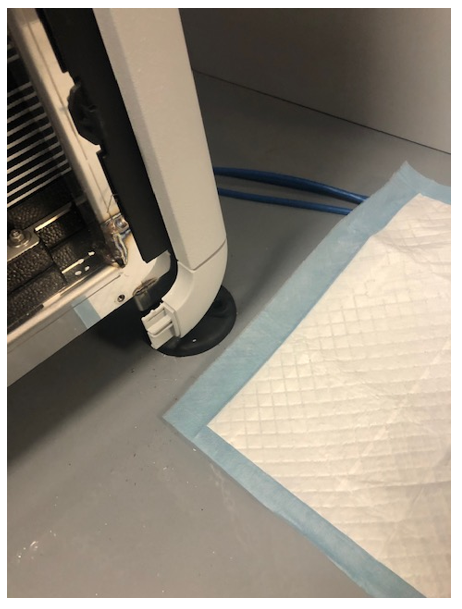
- Remove the back trim piece.
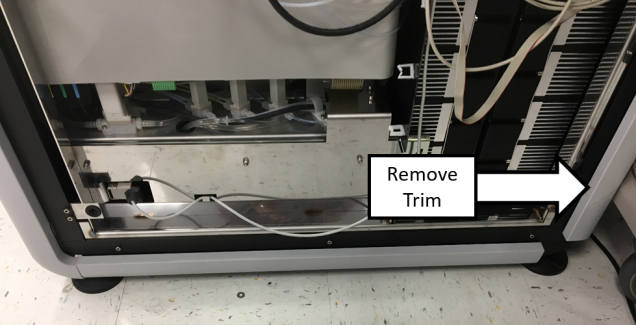
- Install the lower profile cover onto the back trim piece.
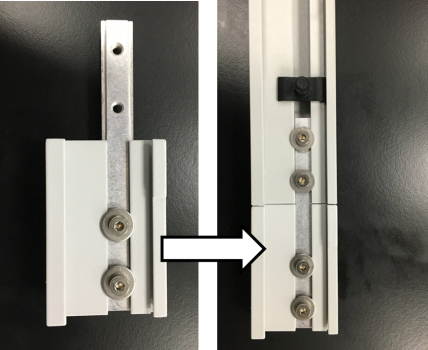
- Reinstall the back trim piece.
- Disconnect the cables to the PCAP monitor.
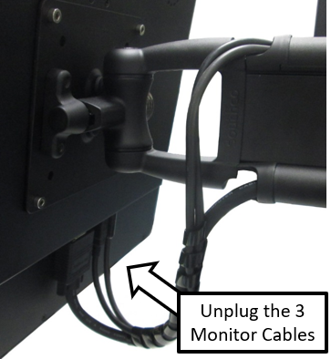
- Remove and save the cable clamps securing the monitor cables
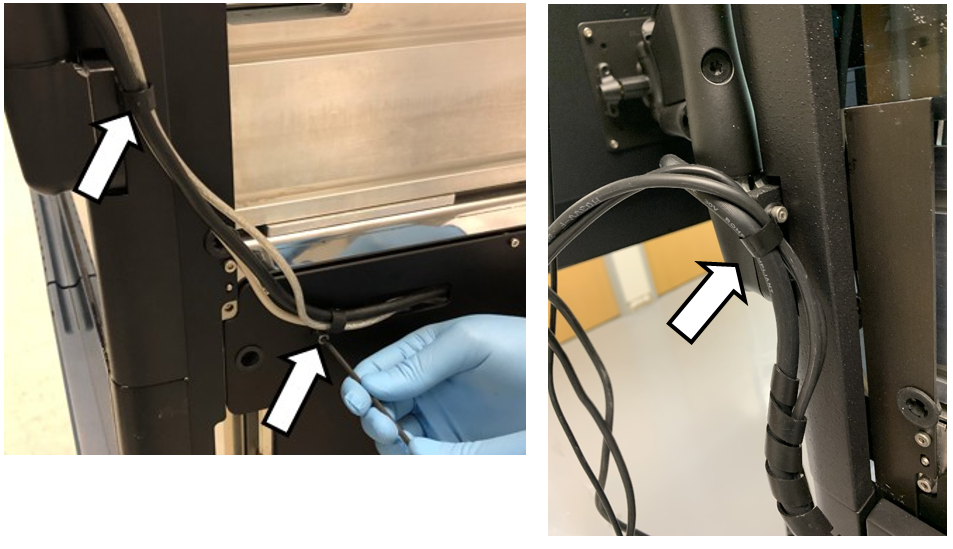
- Route the cables away from the Monitor Arm and out of the cable channels.
- Remove the Hand-held Scanner Bracket.
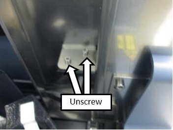
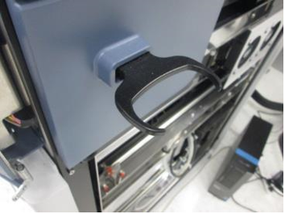
- Remove the USB Hub Expansion Cover.
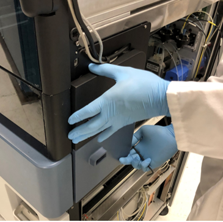
- Unplug the Power and USB cables AND discard the USB Hub Expansion Cover
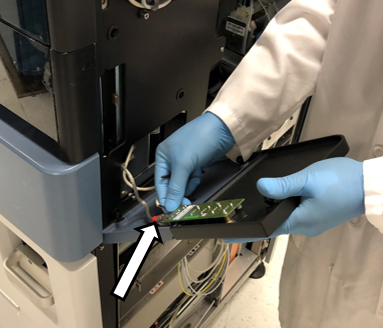
- Route the Monitor and USB Hub cables into the Panther.
- Remove the USB Hub Expansion Cover Mounting Bracket.
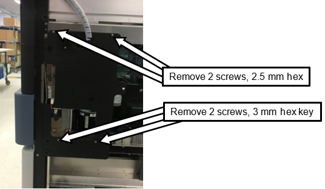
- Remove the USB Hub cables from their routing through the Chassis frame.
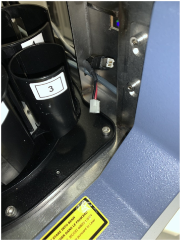
- Release the USB Hub cables from the front cable clamp.
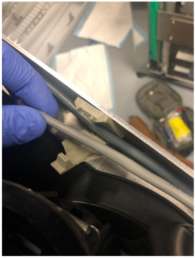
- Remove the black trim from the front right-side of the Panther.
- Remove and save this screw to be used again when installing the new bracket.
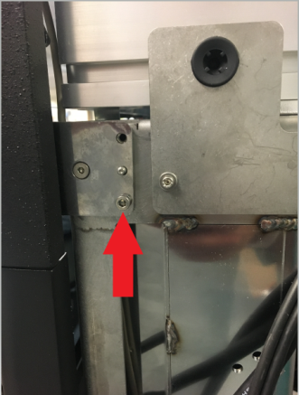
- Remove the door mounting brackets on the front right-side of the Panther.
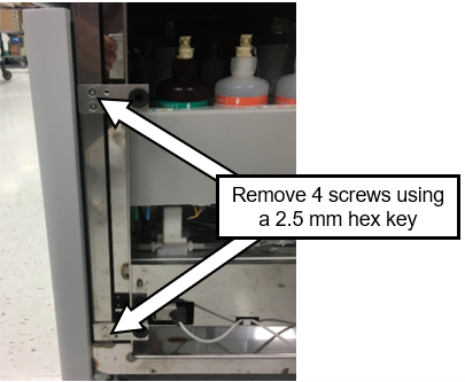
- Remove the tube harness by collapsing the tabs and pushing down on the clip.
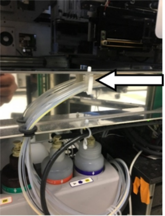
- Attach the L-bracket with the short-end pointing up, as shown below, using the included 2 screws and 2 washers.
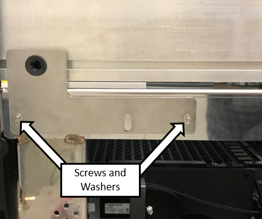
- Install the new trim piece with screw removed in the previous step, into the top hole.
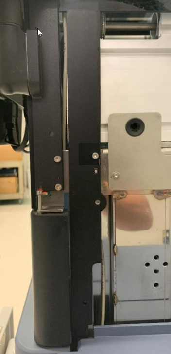
- Reroute the monitor cables, loosely install the lower and upper cable clamps, and connect to the monitor.
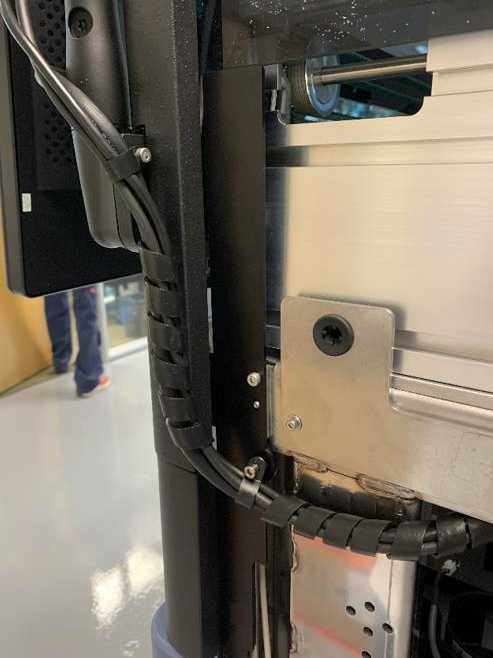
- Reorient the Chassis Fan
- Attach the Hinge Plate to the Panther Chassis.
- Install the Y-splitter CAN cable
- Remove the Input Queue.

Note—If the Input Queue will be returned, decontaminate and complete Decon/OBF/RMA Form [19-02-APX-A]. Save the front and back mounting screws for installation of the MTU Queue in later steps. 
Leave the front cover removed to install the MTU Queue. - MTU Queue Installation

 button at the top of the page to send feedback, comments, or change requests.
button at the top of the page to send feedback, comments, or change requests.